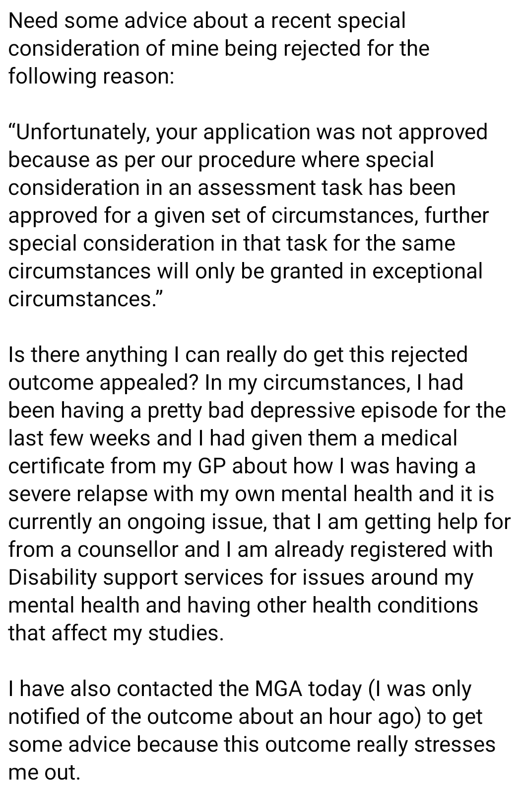
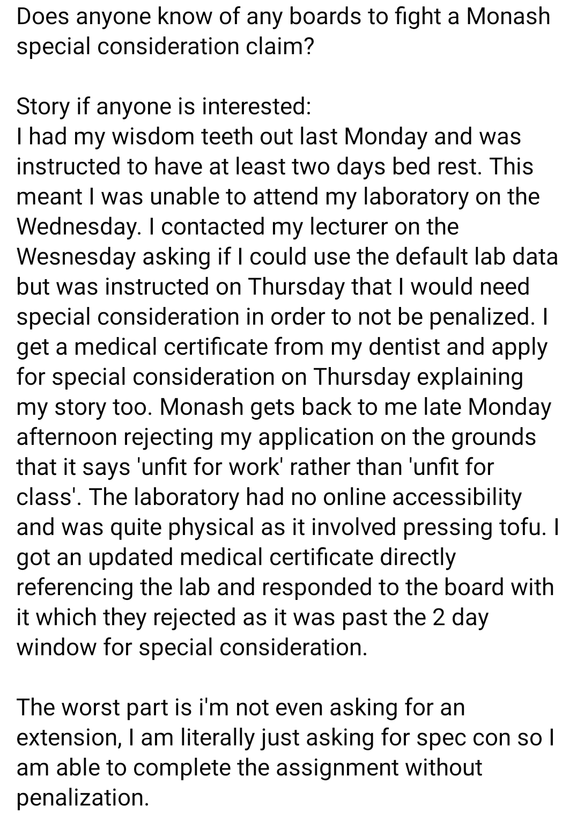

‘If you need special consideration I’ll make you consider getting the hell out of my institution’ - a large number of universities
Adventures with the Special Consideration Team
I don’t care if your dad is in the ICU
Today, my boyfriend, Tom, had is application for special consideration rejected, and I am livid.
Tom has been doing a masters of pure mathematics for the past two years. He also has always had issues with asking for help, and often avoids letting anyone know he is struggling until he has created a big problem for everyone around him. In order to work on this, his psychologist and I encouraged him to try asking for help, especially around uni deadlines, something he has always struggled with.
Over the past 1-2 months Toms dad has been in the ICU four times, once for a mystery illness, once for a blood clot, once for a heart attack, and once for internal bleeding. Each visit to the ICU brought with it a serious probability his dad was going to die. Obviously, this has been significantly costly to Tom in both time (spending most weekends going to the hospital and visiting his dad) and in stress because his dad keeps almost dying. Due to these two costs, Tom has been slowly falling behind in his uni work, and last week submitted an unfinished assignment because his dad went into the ICU for the 4th time and he simply ran out of time.
One might assume, as I did, that this is reasonable grounds for special consideration, especially because he only asked for a 5 day extension. I encouraged him to apply for special consideration and he agreed despite it being an uncomfortable process for him due to his issues with asking for help. He then spent his weekend working on the assignment, putting over 10 hours of labour into it (time that he could have spent studying for other units) based on the reasonable belief that the special consideration team would grant the extension. On the last day the 5 day extension Tom submitted his completed assignment, and the day after he got an email saying his application for special consideration had been rejected because it was “not clear how the issues specified would have prevented him from handing in his assignment”.
Unlike Tom, I have had a fair few run ins with the special consideration team, this means I am aware of the fact that the special consideration team is apparently staffed by unholy demons. It also means I have become accustomed to how they operate. Let me make this clear, the university did not reject Tom’s application because they didn’t believe his dad had a mystery illness, a blood clot, a heart attack and internal bleeding but because they didn’t see why his dad walking a balancing beam between life and death should affect his work. Due to my experience with special considerations, I know it is usually impossible or incredibly laborious to get a ruling such as this overturned. I encouraged him to email the unit co-ordinator and ask for them to accept the extension. After all, he clearly wasn’t asking for indefinite time and had already handed the improved assignment in. The unit rejected his request, and told him to try again with the special consideration team. The special consideration team who had already told him to shove it.
“How do we know you aren’t lying to your doctor”
Over the years I have had to deal with Monash’s internal system a handful of times, none of which were pleasant. The worst case was easily an incident that occurred during the third year of my undergraduate degree.
I was sick and vomiting on the day of my computational mathematics exam, so I went to the doctor to get a doctors note. Under no circumstances could I sit the exam, because if you attended an exam at this uni and have to leave part way through (because, for example, you vomited all over yourself and the exam) then you would fail. The only doctors office within walking distance (I did not have and could not ride public transport because of all the vomiting) could not see me that day. I insisted that it was important, and they told me the best they could do was early the next morning. I was not stressed about this because the university’s special consideration website claimed you had two days to get a doctors note. This turned out to be untrue. My special consideration application was rejected because I “could have been lying to my doctor” because they didn’t see me until the day after the exam. Luckily, I happened to have a recording of my phone call with the doctors office on the day of the exam where I was begging for an appointment while gagging, I also went and got a second doctors note that explained I tried to get an appointment on the day of my exam. Unluckily for me, this was also not considered to be sufficient evidence and the university still believed I was doing some elaborate ruse. I set up an appointment with student support services, and explained that there was literally no way for me to prove I wasn’t lying to my doctor. The university had set an burden of proof that was clearly impossible to meet, and I couldn’t understand why they were so eager to fail me. This fail would have destroyed my WAM which would have barred me from doing a PhD, something I had been working towards for three years. Upon hearing this, student support services told me this was just bad luck and I should drop out and start university again from scratch so I could reset my WAM. Ultimately I did get a deffered exam, but I had to spend weeks chasing this up to the point of lodging an official grievance just so that someone would let me take the exam I had STUDIED for.
Let me make something very clear. This was my experience as someone who was generally an engaged student. I had perfect attendance in most of my classes, and even went on to do a PhD. I also came from a relatively wealthy family so I never needed to be concerned about ballancing work hours and study. If I was struggling this much with this broken system, I cannot imagine how hard it was for students with care-taking responsibility, students from low income families with more serious work commitments, or students living with more demanding disabilities. Wait I can imagine. Students post constantly in the university Facebook group discussing their own horror stories all of them reading as ridiculous and comically inhumane as my and Tom’s experiences. Here are some below:


Abelism in Academia
My experiences with University and Disability
I have a combination of ADHD and Autism that makes watching live lectures incredibly difficult. The first the problem is an auditory processing issues, which means I struggle to understand what the lecturers are saying. The second level of the issue is that I also have “involentary sleep” episodes, which means whenever I am slightly bored for a short period of time I uncontrollably fall unconscious. Thankfully, university has lecture recordings, which means I can better manage these two issues and engage with my lecture content. Lecture recordings are done automatically in every lecture room, so in order to not provide lecture recordings lecturers have to actively turn them off. Additionally, I am registered with disability support services (DSS) and have “access to lecture recordings” in my accessibility requirements. Despite all this, you have to wonder, why I have had two compulsory units refuse to provide lecture recordings, one before COVID and one after. You may wonder why this is OK, given that this is clearly active discrimination. I have a disability, the staff is aware of this disability and if they did nothing my disability would be accommodated for, instead the staff actively make a change that would bar me from accessing the lecture content, thus making the course significantly more difficult. When I asked DSS if anything could be done about this, they told me they had no way to enforce basic accessibility requirements and staff making courses accessible to me was entirely at their own discretion. Great.
Abeslism more broadly in academia
Kay Inckle, in her paper Unreasonable adjustments: the additional unpaid labour of academics with disabilities describes the commonplace abelism she faces as an academic. Shelly Tremain voiced similar complaints about her experiences at the university of Liverpool and even highlighted that the abelism that she face at universities is worse than in any other environment. The examples Tremain and Inckle provides are so absurd they seem like they come from a comedy, but from my experience they is describing the norm in university culture. The two have near identical stories which include:
- Being told timetabling for accessibiltiy is not a priority, and if they need to teach in a room that is not wheelchair accessible, they should just scoot down the stairs on their bottom.
- The department they have been set up to work in not having a fire evacuation lift.
- Other staff telling her it is not “their responsibility to book meeting rooms that are wheelchair accessible”
Trying to rectify these openly discriminatory practices often makes the situation even worse. Both also agreeed that they get significant push back when they highlighted how discriminatory these situations were. Despite being leftist, academics seem completely unwilling to accept that the practices they participate in, and encourage, and inherrently abelist and in many cases illegal. For example, Inckle explains that she could not be booked in a wheelchair accessible room becuase it would “involve ‘disrupting’ someone else and changing their timetable (even though they are not a wheelchair user and therefore do not specifically need that room)”. Inckle goes on to describe the lengthy email and phone conversations that she endures in an attempt to rectify these issues. They are ultimately unproductive are also reminiscent of the process students must go through for special consideration. Ultimately Inckle addressee the problem at it’s core, and this quote from her article is worth reading in full.
There is still a general culture of disbelief within universities (and wider society) that it is possible to have a disability and to be an academic – I suspect that this is also quite gendered and the fact that I am also female further compounds such disbelief. Thus, while many universities have now just about accepted that it is possible to have disability and to learn, and have therefore subsequently made some minimal provisions for disabled students (although not without frequent gaps and failings), the possibility that a woman could have disability and have something to teach,seems beyond credibility. This unspoken belief then leads to assumptions that my request for accessible rooms is really just me being awkward/difficult and placing an unnecessary burden on someone else’s workload. As such,staff respond in kind by being awkward and obstructive and increasing myworkload by either refusing my requests altogether or insisting that I have to arrange a face-to-face meeting if I wish them to be addressed
There is really one key ideas from this quote that are apparent in the special consideration issues with students, my and other academic’s issues with disability support services, and physically staff issues with the university of liverpool. It is this:
Universities are prestigious institutions that are the epitome of human intellectual achievement. If you have any problems with the institution that exemplifies human intelligence, you are clearly defective and do not belong here.
Once it is established that a mentally ill student, or disabled staff member does not belong in the shiny academic institution, they are driven out. This is done by refusing very reasonable accommodations. For students this results in failling grades for units they had the ability and desire to pass, for staff this results in a hostile and/or degrading work environment. The exact same mechanism that causes the suffering of students causes the suffering of disabled staff. It is a refusal to slow down, a refusal to give people space to be a human with feelings and problems and limitations. A refusal to adjust when it is clear what we have is not working. What is ironic, is that this is the exact same mechanism that causes suffering in the non-disabled academic staff too.
How academic staff impose this mentality with their own students
What is insane about this entire system, insane about this “punish the weak” mentality universities push, is that nobody can do it. Lecturers and teaching assistants themselves cannot keep up with the workload at the end of a university semester.
One of my main supervisors is currently overworked and has been unable to attend my supervisor meetings because of it. When I say unable to attend, I mean she has been to around 2 of the past 12 meetings. I am not upset by this, I have other supervisors that can give me feedback and I don’t think it is my business to admonish someone else for being overworked. What I find interesting about this, however, is that the PhD supervisor that has been unable to attend my research meeting is also the Chief Examiner for the unit that rejected my boyfriends special consideration. This highlights a strange duality, where teaching staff are falling behind but cannot give the students the break they wish they need themselves. Some staff can ignore some respoisibilitis of their job to ease the burden (e.g. by not coming to research meetings) but my boyfriend cannot simply stop turning up to work. This is not unique to my boyfriend’s coursework unit.
The unit I teach has similar issues. Recently, the Chief Examiner of the unit I teach CCed me in an email replying to a student. This email explained to the student that the marks of the first assignment were delayed because multiple students asked got 10 day extensions from the centralised univeristy system. This is not true, however the mark delay was also not the fault of the chief examiner. It was mine. At least a week of the delay in returning the marks to the student for their first assignment was because I had not finished marking, and I was struggling with the workload. Even with the 10 day extension, the last assignment was handed in a full 2 weeks before the marking was finished. As I write this not even a third of the second assignment has been marked, despite it being due over three weeks ago and the last submission was handed in over two weeks ago. I’m not even in the group marking this assignment this time. Similar to the students, as the semester goes on and work stacks up, it becomes harder to adhere to deadlines. I believe the Chief Examiner of my unit was trying to provide a reason to the students for the late marks, that did not involve throwing me under the bus, but the reality is the marking was late because of me. Not the students.
I also know that a lot of the teaching staff feel immense guilt for these deadlines. TA’s feel guilty for not marking faster and getting assignments back. I can tell my supervisors feel guilty when they don’t have time to meet or give feedback on my work. My boyfriend feels guilty every time he hands an assignment in late. Students feel guilty for not starting assignments earlier even though they know the reason they started late was because they had two other assignments and a mid-semester test due the week before. We punish students for being unable to balance the workload we also struggle with.
While refusing to accept extention requests is likely a by-product of abelism, accepting extensions is only a bandaid solution. The real ableism comes from the rigidness of the university environment and percieved culture of “excellence”. This is made worse as we move towards the end of the semester, where, for the last 6 weeks of every semester, every cog must work 50 hour weeks to avoid the entire thing falling appart. The university environment we live in is designed for robots, not human beings who cannot control the upsets in their lives. Upsets that are much more common for marginalised students, especially low income students or those living with mental illness or disability. The curb cut effect is the idea that accommodations for disabled people also benefit those that do not live with disability. In this case, a more relaxed environment would also help the overworked academics. Universities are in serious need of some curb cutting, so what can we do about it?
What should be done
If you have the ability to make changes to the way your course runs so that students don’t need to ask for extensions at all, I would recommend making that change. At the OZCOTS conference last year Wesley Burr gave a talk on a more flexible approach to teaching and grading, the slides for that talk can be found here. Basically, his courses are broken up into a set of very small learning outcomes (his mathematical statistics course had 45) and students work independently on these outcomes. They can access all the outcomes at the beginning of the semester, and work on them in any order. The students can submit a maximum of two assessments per week (this was to prevent them doing the unit all at once at the end of the course) and could miss submitting for several weeks and not face any deductions. While labour intensitve and complicated to implement, Wesley claimed this system made marking less insufferable and also resulted in happier and less stressed students. What is most interesting about this solution, is that it it addresses the core issue of ablesm in universities.
This does not fix the internalised abelism among staff. It also doesn’t fix the rigid abelist central systems that exist in most universities, however I do think adjusting your own courses (or encouraging your chief examiner to) would help to see that students are not failling because they want to, but because we have set them up to. Many staff speak about extensions with a subtext, it is clear they think an extension is akin to cheating. It is a zero sum game view of accomodations one that is inherrently abelist and does not recognise the benefits for all that come with accessible systems. We should approach accomodations as an opportunity to improve university life for all, not as disabled staff and students taking from others. Accommodations like these can help teaching staff see that the students want to succeed, they want to do all their assessments, we just need to give them the ability to.
Concluding comments
In the short term, we should accept students extension applications, in the longer term, we should adjust the delivery of our units, and in the longer longer term, we should fix the rigid centralised systems of our universities. Academic staff are not powerless, they have the power to control the small island that is their unit and make it more accessible to students. We do not have to use the institutional abelism that exists in every university as justification for our own. Fixing up our own islands is the easiest place for us to start.